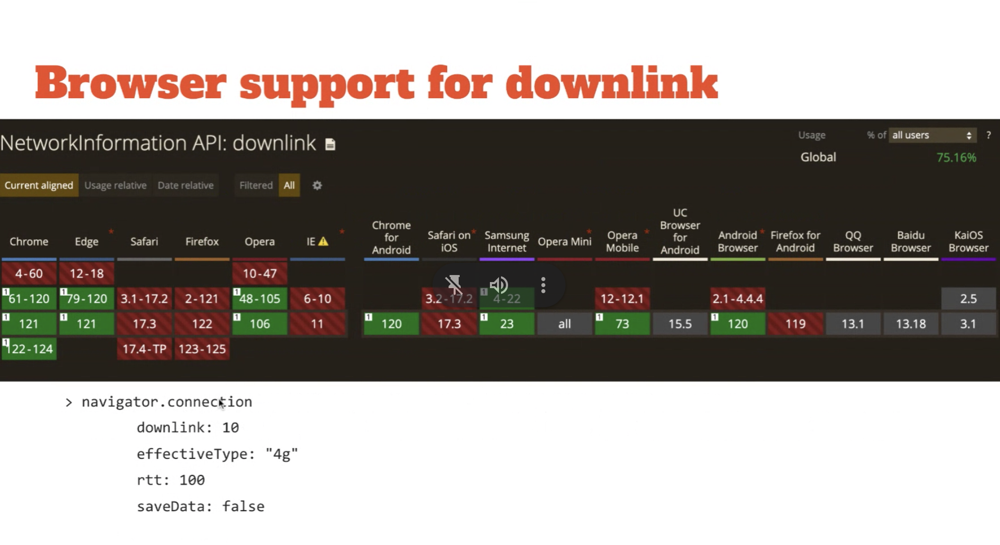
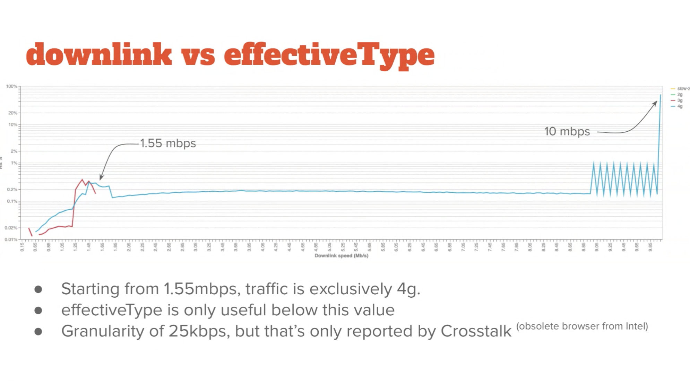
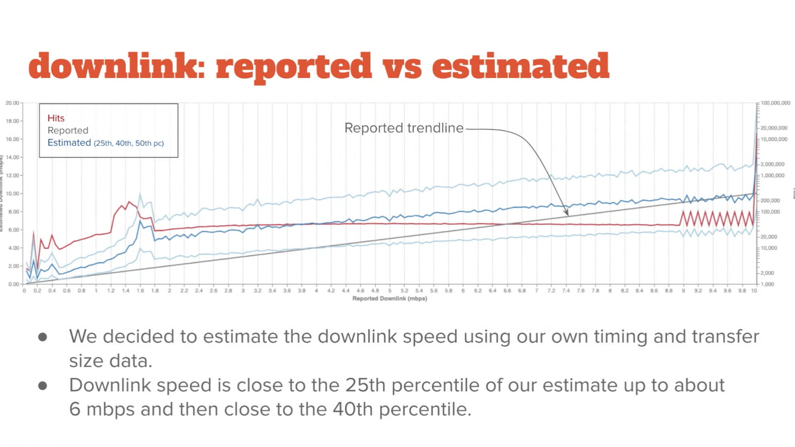
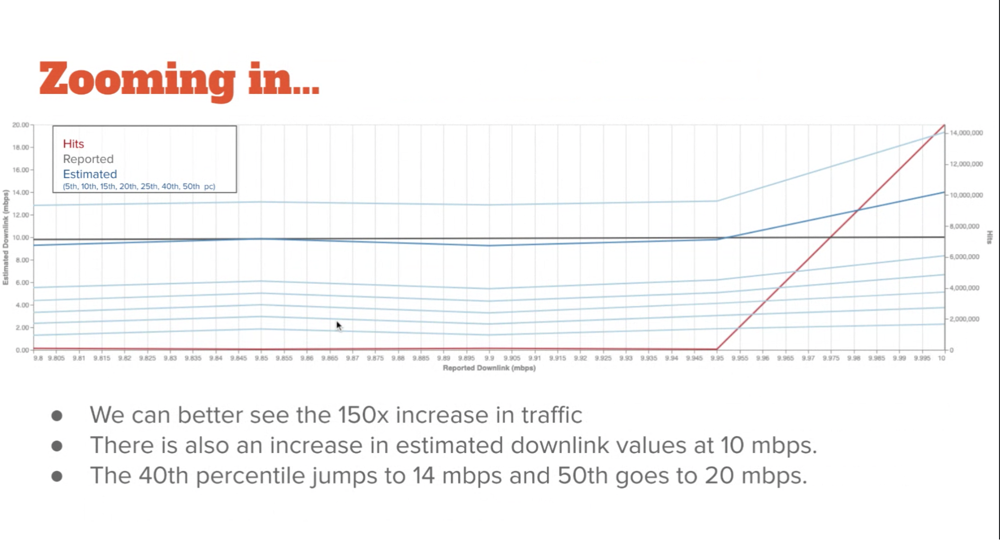
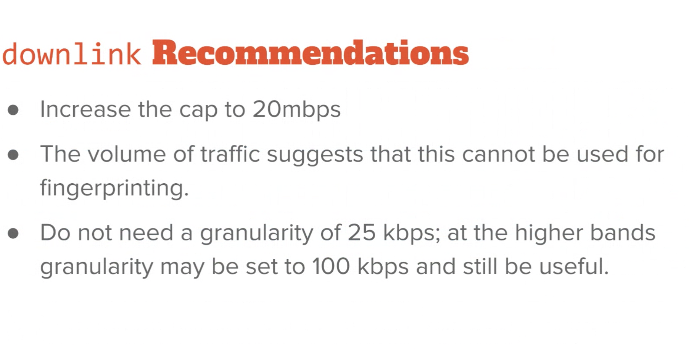
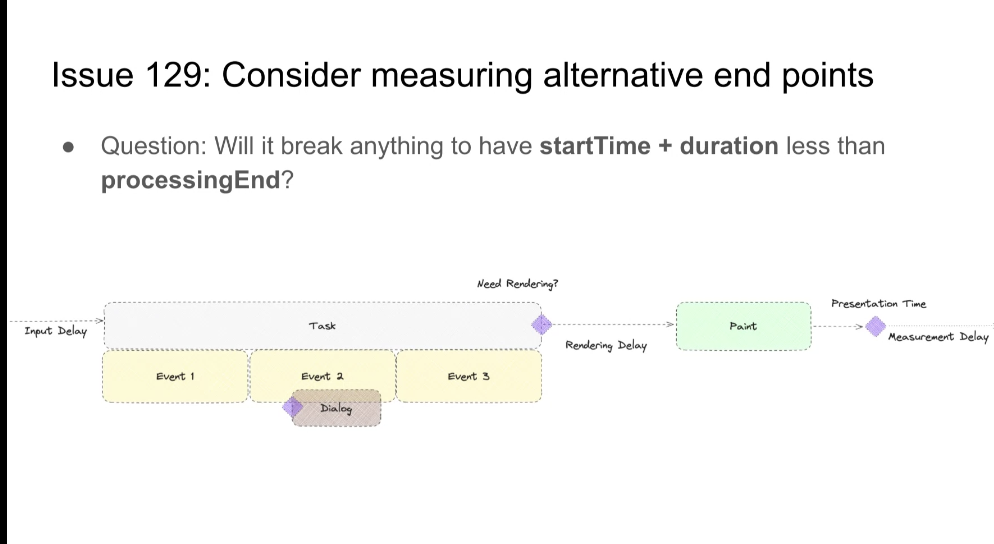

Participants
- Amiya Gupta, Andy Davies, Aoyuan Zuo, Dan Shappir, Giacomo Zecchini, Katie Sylor-Miller, Michal Mocny, Mike Henniger, Ian Clelland, Hao Liu, Noam Rosenthal, Patrick Meenan, Sean Feng, Thomas Steiner, Yoav Weiss, Nic Jansma, Sia Karamalegos, Philip Tellis, Barry Pollard, Carine Bournez, Lucas Pardue, Benjamin De Kosnik
Admin
- Next meeting: Feb 15, 2024 @ 1pm EST / 10am PST
- fetchLater OT starting in Chrome 121 - 126
- LoAF split from LT into its own spec
- PaintTiming refactoring landed!!
- ServerTiming to CR??
- Yoav: Distributed Tracing interested in using ServerTiming following conversations we had with them from 2018
- … Concerned it’s Working Draft
- … No one has championed it to take it on
- Michal: Why the interest from Distributed Tracing (DT)
- Yoav: DT is defining server-side headers in order to pass IDs between one-another in order to create a trace of what happened in lifetime of the request
- … Want to be able to communicate that with the client
- … In 2018 we suggested ServerTiming
- … Broader adoption today
- … DT is still concerned about their spec to rely on a WD, stability issue concerns
- Nic: Akamai is interested in pushing it forward as well, so Nic will help
Minutes
Recording
- Philip: Started out with trying to add downlink values to the RUM Archive
- … Wanted to see what the granularity of the data was
- … Took on a life of its own
-  height: 1082.00px; margin-left: 0.00px; margin-top: 0.00px; transform: rotate(0.00rad) translateZ(0px); -webkit-transform: rotate(0.00rad) translateZ(0px);" title="">
- … Data maxes out at 10mb
- … Talk about effectiveType and RTT
- … Browser support is mostly Chromium-based
- … Granularity of 25kbps
- … RTT can be from 58ms to ?ms
- … Cap to prevent fingerprinting
-  height: 1108.00px; margin-left: 0.00px; margin-top: 0.00px; transform: rotate(0.00rad) translateZ(0px); -webkit-transform: rotate(0.00rad) translateZ(0px);" title="">
- … Started looking at downlink speed
- … effectiveType is the color – red 3g, blue 4g
- … 2g data but you can’t see this in that range
- Nic: What data source
- Philip: All mPulse customers, across a small period of time, over multiple days
- … Representative across all customers
- … One thing that does stand out to me is the spike at 10mbps
- … Log chart, 150x population growth at the peak
- … effectiveType isn’t useful in segregating this data, they’re all competing for 0.5% of traffic
- … if we added another value for 5g it would arrive at the end
- … 25kbps granularity isn’t seen, 50kbps effective (except for old Intel browser CrossTalk)
- … Moving from 9.95mb to 10mb we see 150x increase in traffic
-  height: 1118.00px; margin-left: 0.00px; margin-top: 0.00px; transform: rotate(0.00rad) translateZ(0px); -webkit-transform: rotate(0.00rad) translateZ(0px);" title="">
- … Instead of looking at recorded values I looked at our own transfersize and time data to estimate
- … downlink speed should be less than reported
- … not exactly what we see
- … At the lower end of spectrum we see 25th percentile (also shown 40th and 50th percentiles)
- … Data tends to trend along 25th percentile until it gets to 6mbps then it trends to max
- … Wanted to look at data around 10mbps range
- … height: 1086.00px; margin-left: 0.00px; margin-top: 0.00px; transform: rotate(0.00rad) translateZ(0px); -webkit-transform: rotate(0.00rad) translateZ(0px);" title="">
-  height: 916.00px; margin-left: 0.00px; margin-top: 0.00px; transform: rotate(0.00rad) translateZ(0px); -webkit-transform: rotate(0.00rad) translateZ(0px);" title="">
- … recommendations that we have is there’s probably not an increase in fingerprinting by increasing the cap
- … enough data, 150x volume
- … quite a huge range to reduce likelihood of fingerprinting
- … we probably don’t need granularity of 25kbps – set to 100kbps at higher ranges?
- Nic: The other attribute is the effectiveConnectionType.
- … An estimate the browser gives, Philip showed that 4G is the vast majority of data
- … We’ve had some discussions around the effective type, with Thomas Steiner proposal to reboot it
- … Suggestions to add 5G and otherwise increase usefulness
- … The reboot proposal added metered connections, etc
- … Lots of usecases around this and people want to act on this data
- … Analytics case is important to mpulse. Would be interesting to improve this data
- … we’d like to surface this data into the RUMArchive
- … Would be nice to revive the spec
- Thomas: Both Mozilla and Apple refused to implement NetInfo but people find it useful
- … Redesigned the API from scratch based of feedback from folks
- … Not proposing additional fields but replace everything with `sustainedSpeed` and `metered`
- … Some OSes let you tell the OS that the network is metered, so you may want to save data in such cases
- … Imagined some set of browser settings where people can indicate their network is metered
- … This didn’t succeed - Mozila and Apple still didn’t like it
- … Debates about what it means to be `metered` and about privacy concerns
- … Francois implemented part of this in Chromium behind a flag
- … Failed to find an engineer that would own this long term
- Lucas: The labels are completely meaningless. Gathered data in CF and it wasn’t useful.
- … Are we measuring throughput, latency or a combination of both?
- … High throughput is not sufficient for web performance. Some applications are more latency sensitive
- … Things you want to use may be controlled by the quality of the internet connection
- … ISP can throttle or rate limit, so that your speed is fine but degrades over time
- … CF has a speed test, been pushing on measuring latencies
- … If the proposal is to send less data on a slow connection, that’s fine but a bit boring as a usecase
- Barry: One thing Philip mentioned is that effectiveConnectionType has few people at the low networks. Is that a fingerprinting concern in and of itself?
- Philip: Larger buckets would work. We can get rid of the labels
- Noam: Regardless of privacy concerns, is the API going to stand the test of time. When we measure something particular about the network condition, can that get stale after a while?
- … Does 5G today mean the same thing that it’d mean in 5 years? What about code that already relies on current semantics
- … e.g. UA strings. Web content that makes assumptions based on that and it changes over time
- … Would the content created today based on these semantics still work in the future?
- Yoav: I agree we shouldn’t define things that have varying semantics over time. E.g. 4g or 5g as buckets
- … Today’s 4g may be different from yesterday’s 4g, different than tomorrow’s
- … API as it stands today is exposing too many bits for fingerprinting
- … Everyone that’s not 4g is standing out
- … At the same time it’s not useful for analysis and adaptation that we originally wanted to use it for
- … Regarding metered connections and Thomas’ proposal, I somewhat agree that it’s novel information that would be complicated. Exposing new information is complex.
- … Simplest form this API can become useful is to get rid of effectiveType. Everyone would be 4g, and that’s it. Or “unknown” if that’s web compatible.
- … Doesn’t give us any useful data and it’s risky
- … We already have downlink, and rtt, I don’t know about latency-sensitive cases and what are the largest buckets that can be useful for latency?
- … What are the largest buckets useful for downlink? Can be exponential?
- … 0-100, 100-1000, 1000-10000
- … Not change the API shape, but change the data it exposes in order to reduce privacy risk and increase usefulness
- … By bumping limit beyond 10mb
- … I think this would be a modest improvement to what we have today that would reduce risk and increase usefulness
- … Main problem is finding people that would modify existing API in Chromium
- … Whether if this case is useful we can have a conversation with Mozilla and Apple folks to convince it’s useful and not as harmful, since we changed it
- … A direction I think we can take
- … Main hurdle is we need a champion
- Dan: We keep talking about usefulness, what is it useful for?
- Nic: collected use cases in the past. Will find it
- Dan: Would the additional information in the higher values be useful of these usecases?
- Yoav: any volunteers?
- Nic: From the Akamai side, Philip and I can work on this.
Recording
- Issue 126: Consider exposing event target ID
- Issue 129: Consider measuring Events until alternative end points
- Michal: Trying to make progress on these issues in Chromium and wanted to discuss
- … Issue 126 - Event Timing is good for measurement but it needs useful attribution.
- … It tries to report the entry target but that’s a wekref and can become null
- … So you may find that the observer has no target
- … Suggestion is to serialize a representation of the target
- … e.g. report the tagName and ID
- … Information about anchor tags
- … Or even full queryselector
- … Precedents - PaintTiming exposes an element which is a weakref to the element, but also exposes identifier and ID
- … LoAF provides attribution but that’s not really related
- … NoamH mentioned that he keeps a map of events and event timing based on the timestamps
- … Harder to do that as a RUM product
- … That’s the general problem - do we need more than an ID?
- Issue 129 - How to measure event timing to alternative end points
- … What if there’s no next paint? What if there’s a next paint that’s not related?
- … e.g. visibility change - the next paint can take many seconds because the page was hidden, but that’s not interesting
- … For ElementTiming we expose the by exposing loadTime and renderTime separately
- … We could expose *what* time impacted the end time
- … Spec currently says that the duration is relative to the next rendering opportunity
- … Do we need the specific reason for the end time for events?
- …Originally thought it’s sufficient to use duration
-  height: 544.00px; margin-left: 0.00px; margin-top: 0.00px; transform: rotate(0.00rad) translateZ(0px); -webkit-transform: rotate(0.00rad) translateZ(0px);" title="">
- … startTime + duration is supposed to be the end of eventTiming, but in this case, if we use the dialog-start as the end time, we will have situations where processingEnd, or even processingStart, come AFTER the end of the Event Timing (based on duration)
- … Exposing the raw data of which time was used can become important.
- Nic: RE issue 126, we had similar challenges. Trying to get attribution data, so ended up doing something similar when the element exists.
- … ID, tag name, pseudo CSS selector
- … Combination of all 3 was useful
- … Exposing that for elements that are no longer there would help us
- … But different pages need different data to let developers know what element and event was responsible
- Michal: Trying to solve this at the start of event dispatch. So you could find the node and reproduce the interaction that was about to happen
- Nic: Query selector was almost too precise. E.g. sometimes the parent is not important, etc
- Ian: queryselector for an element that no longer exists is a hard problem.
- … looking up the tree for something that’s globally unique
- Michal: least verbose
- Ian: Thinking of playing with that in a chrome extension
- Nic: We have something like that in Boomerang. Feel free to look at the source code
- Ian: CSS selector could just start as “#id” and then evolve over time
- Barry: Anything is better than nothing. Just the ID is fine as we’d tell developers to add IDs
- Michal: Let’s call it “selector” and evolve it over time?
- Tariq: ID is tricky in our system, we don’t control it necessarily. Maybe a “data-” attribute that can have collisions?
- … Full query selector on the element - can we just get an array of css class names that can point developers in the right direction?
- Michal: You can add more data, but SSR content can create noise, love the minimum necessary data
- … If you have a custom list (e.g. opt in for developers) perhaps via PerformanceObserver options… but hopefully this isn’t necessary.
- Noam: RE the alternative timing, we should learn from RT and SW. Some timings mean different things and it wasn’t necessarily a good exercise.
- … Lots of confusion around this. Should learn from that
- Michal: My goal is that once we decide next paint is not relevant, we should not measure it anymore.